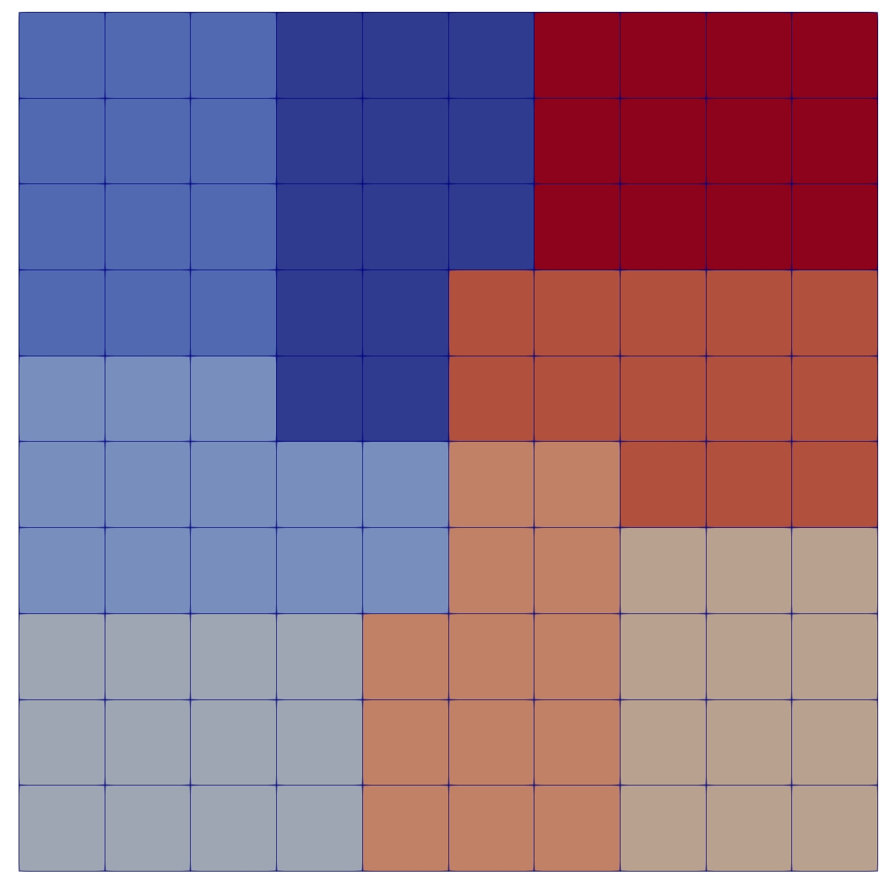
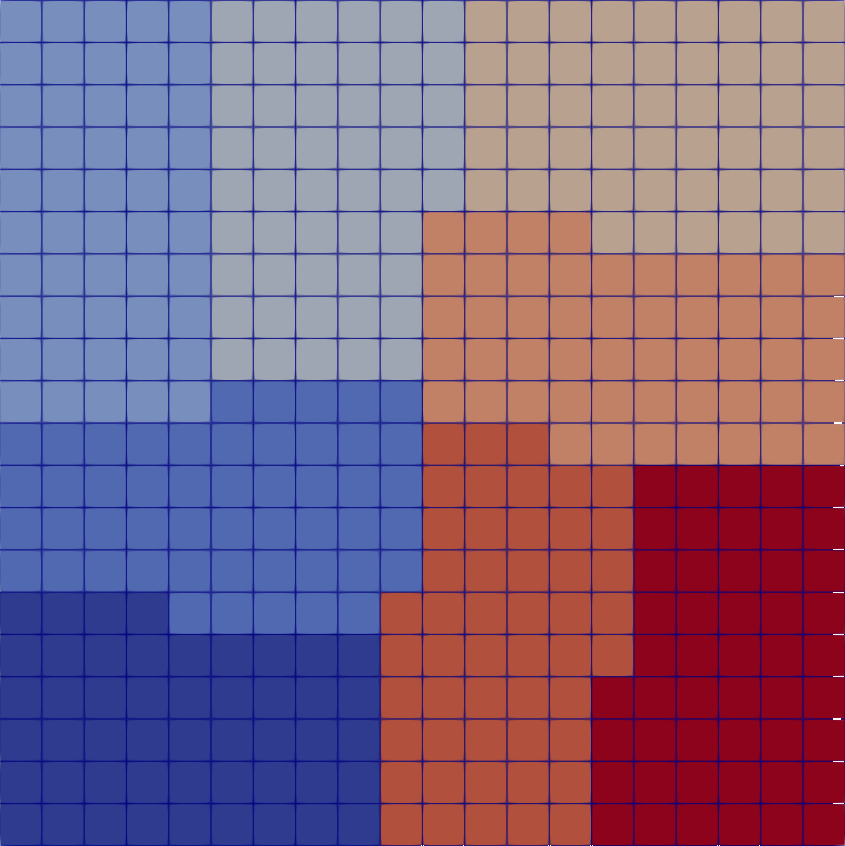

- apply_element_weightFalseIndicate if we are going to apply element weights to partitioners
Default:False
C++ Type:bool
Controllable:No
Description:Indicate if we are going to apply element weights to partitioners
- apply_side_weightFalseIndicate if we are going to apply side weights to partitioners
Default:False
C++ Type:bool
Controllable:No
Description:Indicate if we are going to apply side weights to partitioners
- num_cores_per_compute_node1Number of cores per compute node for hierarchical partitioning
Default:1
C++ Type:unsigned int
Controllable:No
Description:Number of cores per compute node for hierarchical partitioning
- part_packageparmetisThe external package is used for partitioning the mesh via PETSc
Default:parmetis
C++ Type:MooseEnum
Controllable:No
Description:The external package is used for partitioning the mesh via PETSc
PetscExternalPartitioner
Allow users to use several external partitioning packages (parmetis, chaco, ptscotch and party) via PETSc. Note that partitioning, just as meshing, requires a level of user insight to assure the domain is appropriately distributed. For example, edge cases where one seeks to have very few elements per process may misbehave with certain partitioners. To avert such situations, we switch ParMETIS to PTScotch in cases with less than 28 elements per process, and notify the user.
ParMETIS
ParMETIS is an MPI-based parallel graph partitioner implementing mainly a multilevel K-way algorithm. The basic idea of the multilevel K-way algorithm is to coarsen the graph firstly, partition the coarsened graph and then refine the partition. It is solving a multi-constraints optimization problem.
PTScotch
PTScotch is a software package which compute parallel static mappings and parallel sparse matrix block orderings of graphs. It implements graph bipartitioning methods including band, diffusion and multilevel methods.
Chaco
Chaco contains a wide variety of algorithms and options. Some of the algorithms exploit the geometry of the mesh, others its local connectivity or its global structure as captured by eigenvectors of a related matrix.
Party
The party package aims at providing a recursive partitioning laboratory assembling various high- and low-level tools for building tree-based regression and classification models.
Use
These packages can be accessed via an unified interface in MOOSE, PetscExternalPartitioner. The use of the packages is accomplished by adding a subblock in Mesh block of input file. For example
[Mesh<<<{"href": "../../syntax/Mesh/index.html"}>>>]
type = GeneratedMesh
dim = 2
nx = 10
ny = 10
[Partitioner<<<{"href": "../../syntax/Mesh/Partitioner/index.html"}>>>]
# You need to use PetscExternalPartitioner to gain an access to these external packages
type = PetscExternalPartitioner
# specify which package you want to use
# you could choose one of {Chaco, Party, PTScotch, ParMETIS}
part_package = parmetis
[]
parallel_type = distributed
# Need a fine enough mesh to have good partition
uniform_refine<<<{"description": "Specify the level of uniform refinement applied to the initial mesh"}>>> = 1
[]Partitioning Examples
commentnote
For less than 28 elements per process we switch partitioner from ParMETIS to PTScotch. For these two partitioners we illustrate the refined grid case, where the switch does not occur.
4 subdomains
10x10 grid

Party
10x10 grid

chaco
20x20 grid

parmetis
20x20 grid

ptscotch
8 subdomains

Party

chaco

parmetis

ptscotch
commentnote
By default, all element and face weights are uniform. This can be modified by implementing computeElementWeight and computeSideWeight in a derived class of PetscExternalPartitioner. For example, the BlockWeightedPartitioner returns different weights for all elements in a block.
Input Parameters
- control_tagsAdds user-defined labels for accessing object parameters via control logic.
C++ Type:std::vector<std::string>
Controllable:No
Description:Adds user-defined labels for accessing object parameters via control logic.
- enableTrueSet the enabled status of the MooseObject.
Default:True
C++ Type:bool
Controllable:No
Description:Set the enabled status of the MooseObject.